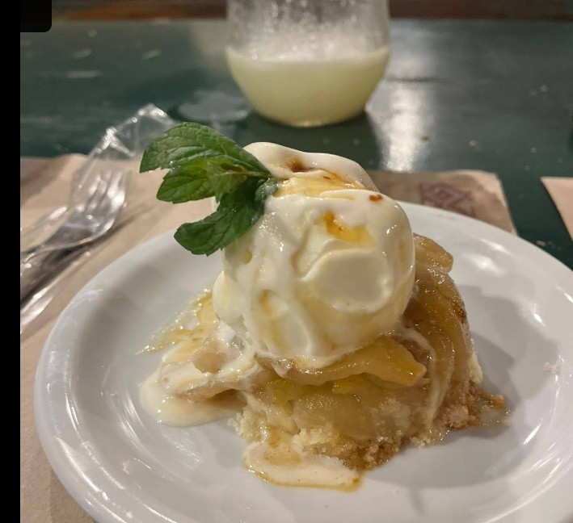
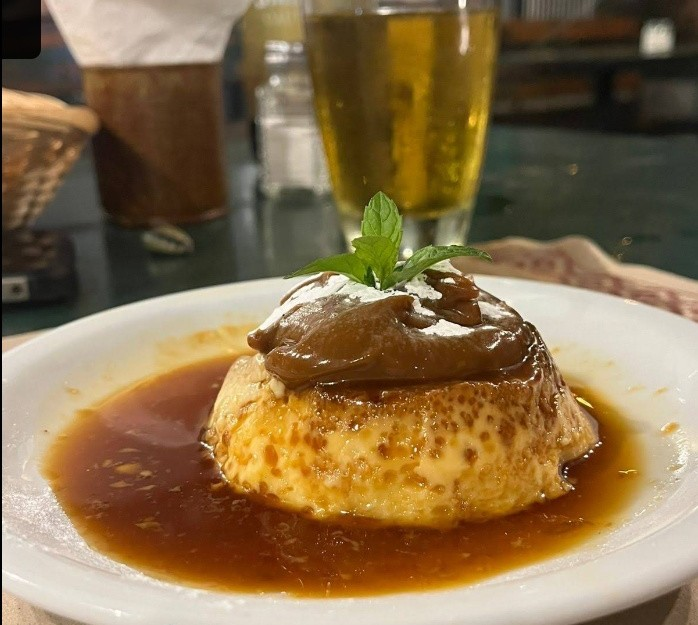
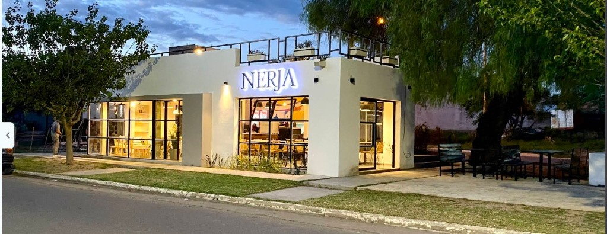
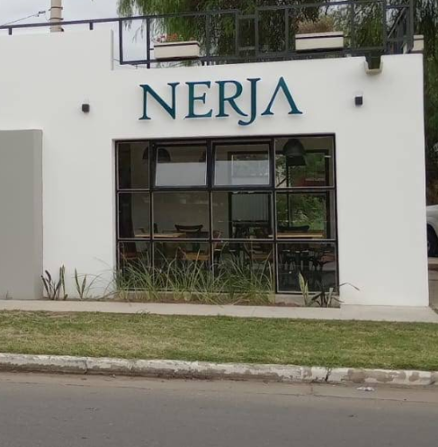

08:30
Mañana
Tostadas, huevos revueltos sobre palta, jugo exprimido y un café con leche que pide quedarse un rato más.

Restaurante & cafetería · Costanera de Cruz del Eje
Del primer café a la última copa, en una casa blanca frente al río. Medialunas de nuestro horno y platos caseros, abundantes.
Nuestra casa
Una casa blanca frente a la costanera, donde el café de la mañana y la cena de la noche se cocinan con la misma calma: productos frescos, platos abundantes y medialunas que salen de nuestro propio horno.
Cruz del Eje, Córdoba

Del día a la noche
08:30
Tostadas, huevos revueltos sobre palta, jugo exprimido y un café con leche que pide quedarse un rato más.

13:00
Cocina casera y generosa: pollo, papas doradas, lentejas salteadas con cebolla y un huevo a caballo.

17:30
Medialunas elaboradas por nosotros, tartas tibias y buen café, con la luz de la tarde entrando por los ventanales.

21:00
Brochettes de carne y vegetales, salsa de la casa y una mesa larga para compartir bajo las luces cálidas.
La casa
Seguí bajando para recorrerla



Pequeña, cómoda y con la costanera enfrente.
Para el final
Flanes, tartas y medialunas hechos en nuestra cocina, todos los días.
Las medialunas estaban exquisitas. Se nota que son muy caseritas.
Febe · reseña en Google
Lo que dicen
Reseñas reales de quienes ya se sentaron con nosotros, en Google.
“De Cruz del Eje, el mejor lugar para cenar. Es la tercera vez que vengo con mi pareja y la comida es un lujo. Platos muy abundantes.”
“Lindo lugar en la costanera para merendar. Buena calidad, rico café y precios súper bien. La atención de los chicos, excelente.”
“Un excelente lugar para ir a comer. Pequeño pero cómodo y bien ambientado. Para cenar está excelente.”
“La comida sencilla y sabrosa, se nota fresca. Sin espera y con un ambiente donde se puede conversar.”
Visitanos